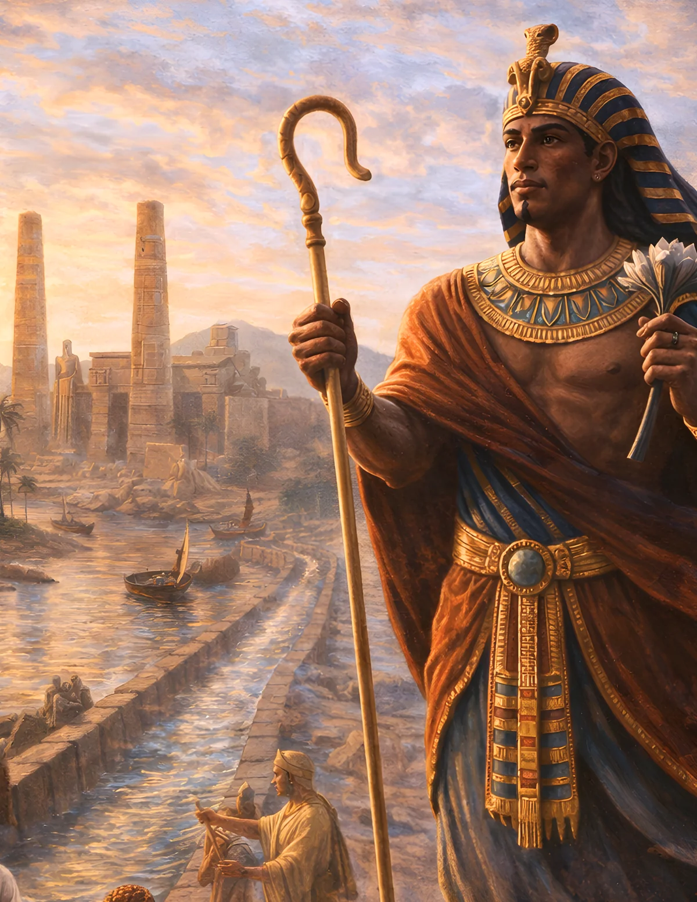

Taharqa (Taharqo)
A Kushite pharaoh between monumental achievement and an expanding Assyrian empire.
Begin the Lesson ↓
Essential Question & Learning Objectives
Essential question: How do we evaluate the legacy of a ruler whose monuments celebrated power even as external threats challenged his rule?
Students will be able to:
- Locate Kush, Egypt and Assyria and sequence major features of Taharqa's reign with appropriate chronological caution.
- Identify how temples, monuments and burial objects communicate public ideas about kingship.
- Explain why Taharqa's military reversals do not erase his accomplishments or the persistence of Kush.
- Write a balanced historical interpretation using at least two types of evidence.
Success criteria: Explain two accurate historical details, examine at least one source limitation, make a supported claim, and score 4 of 5 on the post-check after review. The post-check is not a substitute for assessment of written reasoning.
Teacher Guide · Pacing, Standards, UDL & Differentiation
Suggested pacing: Hook and prior knowledge 5 min; readings, source comparison and questions 18 min; two Decision Rooms 12 min; performance task and peer discussion 15 min; final check 8 min. Adjust as needed; timer buttons are voluntary.
Instructional alignment: CCSS RH.6-8.1 (cite evidence), RH.6-8.2 (central ideas), RH.6-8.9 (compare sources); WHST.6-8.1 and WHST.6-8.9 (argument and evidence). Extend with grades 9–12 RH/WHST source criticism and historiography where appropriate; these are alignments, not a state endorsement.
UDL options: Let students reread chunks, use device accessibility tools, write or speak a claim, annotate a timeline/map, and revisit feedback without penalties. Use visual models alongside print rather than relying on audio alone.
Misconception to watch: Taharqa's loss of control in Egypt did not end Kushite history or mean that Nubia was historically subordinate in every period.
Discussion practice: Ask students to separate the author's claim, the source's date and purpose, and the conclusions we can support.
CAST UDL Guidelines 3.0 · Common Core grades 6–8 historical literacy
Independent Learner Guide · Saving, Progress & Assessment
Start with the diagnostic. Read the three illustrated inquiry sections. Check responses and read the explanations; revise as needed. Decision Rooms are hypothetical choices that help analyze evidence, not factual reconstructions. Complete the final claim and five-item check. The progress bar measures how far you scroll, not mastery; timers are optional and cannot lower a score.
The written reflection saves only in this browser when you press Save. Avoid personal information on shared devices. Optional video areas indicate future, carefully verified media rather than implying an unpublished video exists.
Can a Ruler Build and Lose at the Same Time?
Picture two museum cases. One holds a carefully carved object bearing Taharqa's name; the other contains a map of an Assyrian military advance. Which tells the truer story of the king? The question is misleading: neither object tells the whole story alone.
Taharqa ruled within Kush's Twenty-Fifth Dynasty in the seventh century BCE. This lesson asks you to assemble a balanced account from monumental works, archaeological objects and sources describing military conflict. Success and setback can exist in the same reign.
Formative · Bloom: remember and understand · Do not grade the diagnostic
Before reading: Which approaches create a balanced historical account?
A Reign Across Political Frontiers
Taharqa (also spelled Taharqo) ruled the Kushite Twenty-Fifth Dynasty during the seventh century BCE; the Metropolitan Museum dates his reign in Egypt to approximately 690–664 BCE. Kush's political and religious centers in Nubia remained significant even as its kings exercised power in Egypt.
In the eastern Mediterranean and Near East, Assyria expanded its military power. Assyrian forces invaded Egypt during Taharqa's reign; a major invasion around 671 BCE forced him to withdraw south. Egypt's political future remained contested, and the final end of Kushite dominance in Egypt involved events after Taharqa's reign as well.
Avoid placing all events into a single dramatic moment. Distinguish a reign, an invasion, a retreat and the later political changes of successors. A clear timeline is often the best starting tool.
Check 1 · Which chronological claim is defensible?
What Survives from Taharqa's World?
Temples and inscriptions associated with Taharqa attest to royal sponsorship of religious architecture and public displays of legitimacy. Monumental building did more than make places beautiful; it could associate kings with deities, rituals, local communities and continuity with respected predecessors.
The Metropolitan Museum holds a granite shabti bearing Taharqa's name, probably from his burial area at Nuri. This small funerary figure connects an identifiable king, material from Nubia, and Egyptian-Nubian religious traditions. Because the object can be studied directly, it is a valuable source for craft and funerary belief—but it cannot narrate a king's whole career.
A useful historical question begins with the object: What is its material? Where was it found or likely used? What supports its identification? And which claims would require written or archaeological evidence from somewhere else?
Check 2 · Which claims suit evidence from monuments and museum objects?
Watch & Examine · Taharqa: Artifacts, Temples and Conflict
A related, age-appropriate museum or scholarly video will be embedded here after editorial and timestamp verification. The lesson and assessments work without video.
Suggested future video chapter prompts: reign and map (pending), the Nuri shabti (pending), Assyrian accounts and historical perspective (pending).
For primary research now, open the linked museum or historical sources at the end in a separate tab.
The Meaning of Victory and Retreat
Assyrian records celebrate imperial expansion; Kushite or Egyptian royal monuments emphasize different achievements and ideals. Rather than choosing a 'winner' as the only worthy subject, historians reconstruct changing political realities through sources produced for different purposes.
Taharqa's reign included notable temple activity and the pressure of an expanding empire. His retreat in the face of Assyrian attack does not cancel out the accomplishments represented in surviving monuments. It does, however, require an accurate account of where and when Kushite authority was challenged.
A balanced assessment also asks whose labor made the monuments possible, how religious institutions supported royal legitimacy, and how local Egyptian communities experienced competing claims to rule. Some of those perspectives survive less clearly in official records.
Decision Room: Build a Balanced Timeline
Formative historical inquiry · Scenario is a modern teaching simulation, not a reconstructed conversation
A museum exhibit combines a temple photograph and a battle-map display. Visitors think Taharqa's entire reign was either glorious or disastrous. What should your timeline emphasize?
Decision Room: The Shabti Label
Formative historical inquiry · Scenario is a modern teaching simulation, not a reconstructed conversation
You are asked to explain a shabti likely from Nuri. Which description would be responsible for a student exhibition?
Two Perspectives on Taharqa's Reign
Build a comparative exhibit panel connecting a Kushite royal monument or object with an account of Assyrian military pressure. Explain why neither source should dominate your entire conclusion.
- Write 180 words with one paragraph on monumental achievement and one on contested military power.
- Create an annotated two-track timeline: Kushite public building and geopolitical events, with approximate dates.
- Record a short dual-voice museum guide contrasting an object label with a military chronicle without inventing quoted speech.
Every option needs: A clear claim; at least two details grounded in the readings; one acknowledgment of uncertainty; an explanation linking evidence to the conclusion.
Summative performance · 5–6 strong · 3–4 developing · 0–2 revise and conference
Show What You Know
Answer five questions, check each explanation, and revise as necessary. Correct feedback includes a confetti burst; inaccurate selections receive red feedback. Answers stay on this device.
1. Taharqa belonged to which dynasty?
2. The Assyrians challenged Taharqa's position primarily in...
3. Which sources would help build a balanced interpretation?
4. A shabti can help investigate...
5. Which conclusion is most historically accurate?
The Two-Track Historical Exhibit
- Draw a geographic map that distinguishes Kush, Egypt and Assyria using approximate historical regions.
- Select one royal object from the Met and write a label that clearly states what is known versus inferred.
- Create a timeline card explaining why the history of Kush did not end when Kushite kings lost control in Egypt.
Sources, Interpretations & Evidence Limits
Monuments and artifacts associated with Taharqa belong to the Kushite Twenty-Fifth Dynasty. A balanced explanation requires both museum objects and regional historical chronology.
Reading and scenarios are original educational synthesis and simulations, not quotations from these sources. External material opens in a separate tab. Verify exact wording, dates, and image permissions when assigning outside content.